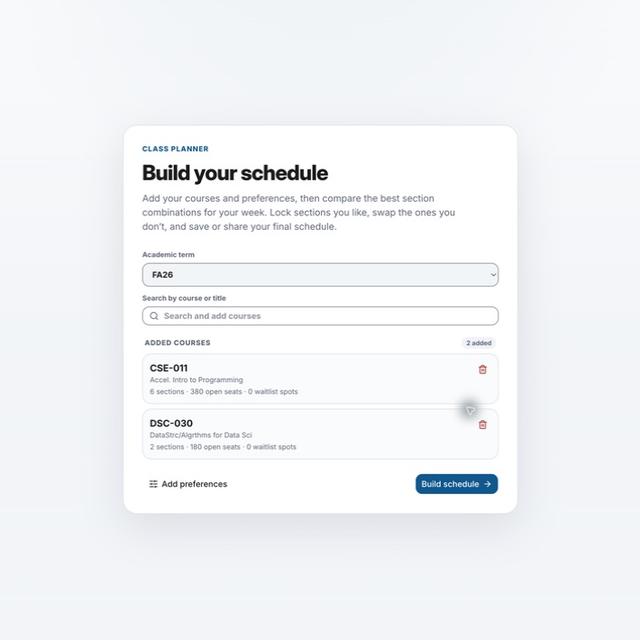
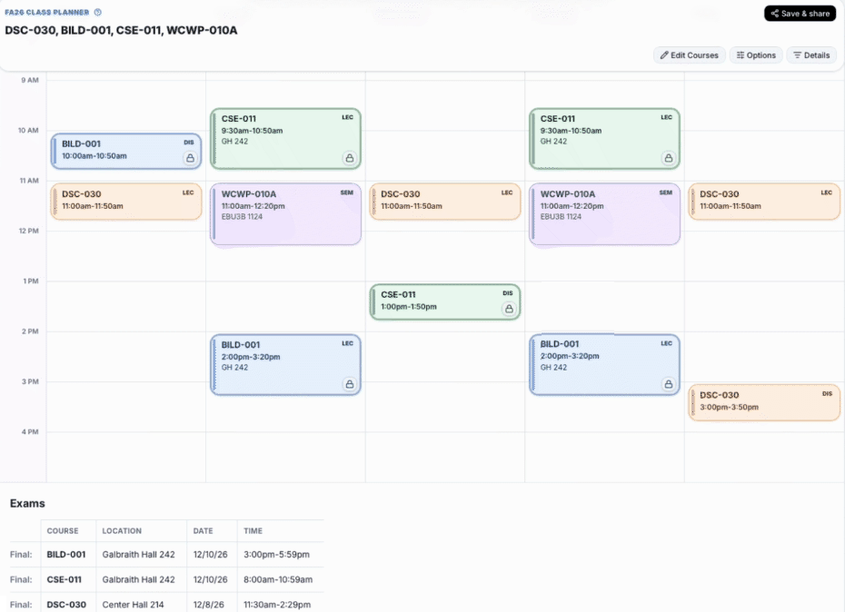
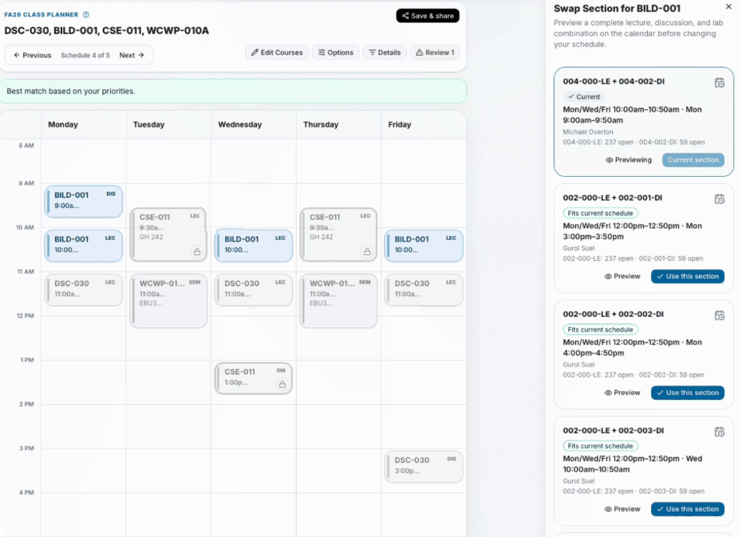
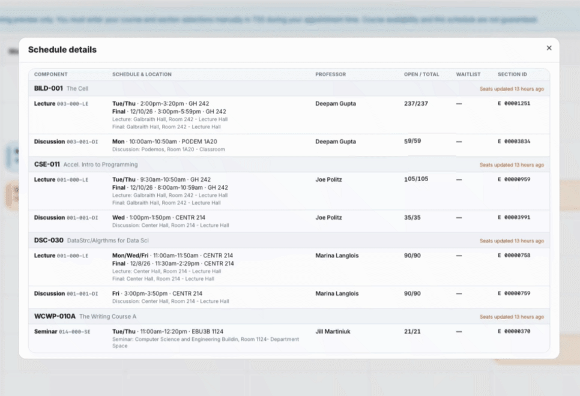

Does Class Planner enroll me in classes?
No. It creates a planning preview. Enter your final course and section selections manually in TSS during your appointment time.
Student guide
Class Planner combines course meeting information with your preferences and unavailable times to generate schedule alternatives you can compare before enrollment.
Review each option carefully. TBA meetings, missing information, warnings, and changing course availability may still affect whether a schedule works for you.

1 Build your plan
Start with an available academic term, then search by course code or title. Partial matches work, and course numbers do not need leading zeroes.
2 Set preferences
Choose Open or waitlist or Open only, then rank the schedule goals that matter most: Fewer days, Later starts, and Shorter gaps.
You can reopen the same preference sheet later from Options.
3 Compare and review
Use Previous and Next to move through Schedule n of n. The option marked Best match based on your priorities most closely reflects your settings; other alternatives may still work well.
The weekly calendar includes all scheduled meeting types. Exams appear in a separate table below the calendar, so check both areas before choosing an option.
No conflicts means no review items were reported. Review n means the planner found items to inspect, such as TBA times, missing components or availability data, or conflicts. A warning does not always make the schedule unusable.

4 Fine-tune sections
Select a course block to inspect it. Use Lock Course to keep that course's selected sections while you browse other alternatives; unlock it when you want the planner to vary those sections again.
Swap Section lets you compare complete lecture, discussion, and lab combinations before changing your schedule.
Open-seat information is a snapshot. Previewing or using a combination does not reserve it.

Open Details to review each component's meeting and exam times, rooms, professor, open and total seats, waitlist, and section ID. The view also shows when the source data was last refreshed.
Missing or older information deserves a closer look in official enrollment tools before you act.

Frequently asked questions
No. It creates a planning preview. Enter your final course and section selections manually in TSS during your appointment time.
No. Availability is a snapshot and may change. Class Planner does not reserve a seat or waitlist position.
Reviewwarning?
Open the review items and inspect the affected meetings or data. Some warnings require a change; others simply call attention to information you should verify. See Compare and review options.
The planner cannot fully evaluate information it does not have. Verify the course in official enrollment tools and leave room for the missing meeting before relying on the schedule.
Yes. Open the saved link and choose Edit to return to Class Planner with the saved sections available for revision.
Yes. Save & share creates a short link you can copy. Anyone with the link can view that saved schedule.
Yes. Use Add to Calendar for an .ics download,
Google Calendar, Apple Calendar, or Outlook. The export is a copy, not a live
enrollment or availability feed.
A plan can contain from 1 to 12 courses. See Build your plan to get started.
Bring your course ideas and any times you already know you cannot attend.
Open Class Planner